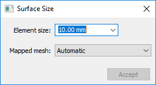
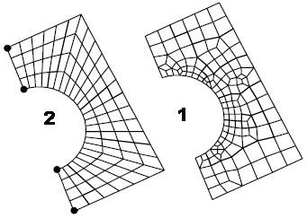
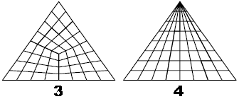

Surface Size dialog box
The Surface Size dialog box is displayed when you choose the Simulation tab→Mesh group→Surface Size command to refine the mesh applied to existing faces.
See Mesh sizing to learn about refining the mesh.

- Element Size
-
If blank, uses element length.
You can enter a nominal value in the Element size box to override default mesh sizing on curves associated to a surface, or to define a mesh on all curves that do not currently have a mesh size. This value is adjusted to fit evenly into each curve.
- Mapped mesh
-
Specifies the type of mesh to be created on a surface. The software determines whether to create a free boundary mesh or a mapped mesh on each surface. The Mapped mesh options give you control over which mesh is used. They also define other conditions that allow mapped meshes to be created on surfaces that could not otherwise support mapping.
- Automatic
-
The software determines which mesh is appropriate based on geometry, mesh sizing, and resulting mesh quality. Generally this can result in a free mesh, denoted as 1 in the following image.

- Mapped Four Corner
-
Creates a mapped mesh on the surface, between four points that you select as the corners of the mesh. These points can be specified in any arbitrary order, but you must choose four different points. The edges of the mesh are all of the curves that lie between the points that you choose. See 2 in the previous image.
- Mapped Three Corner
-
Similar to the Mapped Four Corner option, except that it defines three corner locations, instead of four. The resulting mesh can be an all-quadrilateral mesh on the three cornered surface. Depending on the geometry, however, the resulting mesh can be severely warped. See 3 in the following image.

- Mapped Three Corner Fan
-
Similar to the Mapped Three Corner option, but the resulting mesh has triangles at the first corner location, instead of quadrilaterals. This is the only point that must be specified in a particular order. See 4 in the previous image.
- Accept
-
Applies the value entered in the Element size box and the currently selected Mapped mesh option.
-
If the model contains a single part or sheet metal body, the geometry is selected automatically.
-
In an assembly model, you must select one or more bodies to be sized before you can click Accept.
-
How do I
Mesh the modelActivity: Use subjective mesh sizing
Activity: Apply a surface mesh to a sheet metal part
Activity: Size the mesh on an edge
Activity: Size the mesh on a surface
Learn more
MeshesMesh sizing
Examining the mesh
Identifying areas of poor mesh quality
Look up more details
Mesh dialog boxMesh Options dialog box
Body Size dialog box
Edge Size dialog box
Check Element Quality